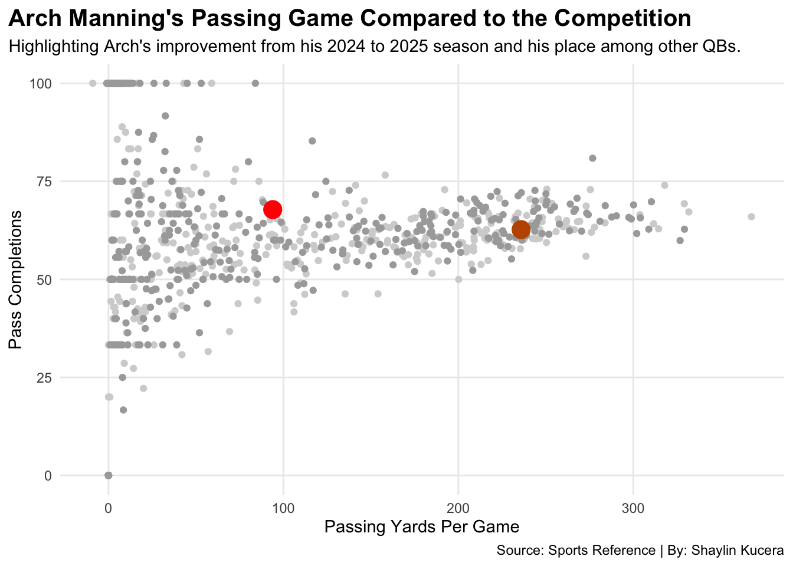
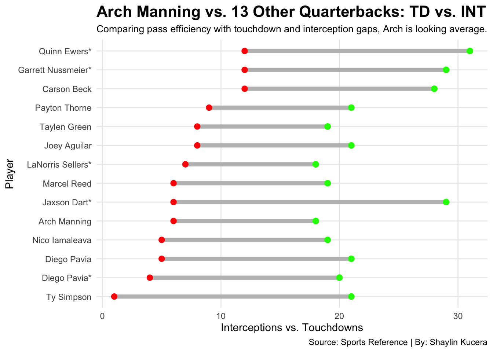

Arch Manning continues to be one of the most discussed young quarterbacks in college football, largely due to his last name and the expectations surrounding him. However, his on-field performance tells a more measured story. Manning has shown flashes of growth and reliability, but he still sits in the middle of the pack compared to other SEC quarterbacks. His numbers suggest a player who is developing steadily, balancing solid decision-making with areas that still need refinement as he gains more experience. Overall, his name is his fame, and his stats don’t show the real hype that people think he has.
When you look past the hype and break Arch Manning down by the numbers, a clearer picture starts to form. Arch isn’t carrying Texas, but he isn’t dragging them down either. The table shows where Arch ranks among the SEC’s top 10 quarterbacks across key efficiency metrics like yards per game, completion percentage, etc. And the takeaway is pretty simple. Arch consistently lands right in the middle.
He’s not touching the conference leaders like Joey Aguilar or Ty Simpson, who push the SEC’s top end in yards and touchdown percentage. But he’s also nowhere near the bottom in the categories that signal real problems, like turnovers or low completion rates. Arch essentially blends into the pack.
This is important context for evaluating Texas’s offense overall. The numbers suggest that Arch isn’t the reason Texas thrives, but he also isn’t the reason they struggle. He’s solid, steady, and fine, but obviously not exceptional. And seeing that in this conference, where great quarterbacks play often makes the difference between “fine” and “great”, and fine doesn’t cut it.
SEC's Top 10 Quarterbacks: Arch isn't bad but isn't good.
Highlighting that Arch's numbers fall between the conference standouts and strugglers in the Top 10.
Player
Team
Yards/Game
Completion %
TD %
Interceptions
Joey Aguilar
Tennessee
304.1
65.7
7.1
8
Ty Simpson
Alabama
273.4
66.9
7.1
1
Diego Pavia
Vanderbilt
244.0
70.0
7.7
5
Taylen Green
Arkansas
263.6
62.4
6.9
8
Trinidad Chambliss
Ole Miss
235.6
64.0
4.9
2
Blake Shapen
Mississippi State
223.4
65.2
5.6
6
Marcel Reed
Texas A&M
243.7
62.3
7.5
6
Arch Manning
Texas
235.9
62.7
6.7
6
Gunner Stockton
Georgia
226.7
69.4
5.8
2
John Mateer
Oklahoma
243.6
63.8
3.0
7
By: Shaylin Kucera | Source: Sports Reference
Looking into Arch Manning’s passing performance to hundreds of quarterbacks across the 2024 and 2025 seasons, again he’s in the middle. Every light grey point represents a QB from 2024, while the darker grey points mark 2025. Arch is highlighted with two dots, red for his 2024 season and orange for 2025. The movement between them tells the story.
In 2024, Arch sat on the lower end of both passing yards per game and completions. However, in 2025, he shifts noticeably upward and to the right, signaling a meaningful improvement. He’s still not among the elite cluster at the top of the graph, but the jump shows he’s trending in the right direction compared to the rest of the field.
Code
FB24 <- football |>filter(Year ==2024)FB25 <- football |>filter(Year ==2025)Completions24 <- FB24 |>filter(Cmp >=50)Completions25 <- FB25 |>filter(Cmp >=50)Arch24 <- football |>filter(Player =="Arch Manning*")Arch25 <- football |>filter(Player =="Arch Manning")OverallCmp24 <- Completions24 |>group_by(Player, Conf) |>summarise(Interceptions =sum(Int),Completions =sum(Cmp),Games =sum(G)) |>filter(Conf =="SEC")OverallCmp25 <- Completions25 |>group_by(Player, Conf) |>summarise(Interceptions =sum(Int),Completions =sum(Cmp),Games =sum(G)) |>filter(Conf =="SEC")Arch24Cmp <- Arch24 |>group_by(Player, Conf) |>summarise(Interceptions =sum(Int),Completions =sum(Cmp),Games =sum(G)) |>filter(Conf =="SEC")Arch25Cmp <- Arch25 |>group_by(Player, Conf) |>summarise(Interceptions =sum(Int),Completions =sum(Cmp),Games =sum(G)) |>filter(Conf =="SEC")season24 <- football |>filter(Year ==2024)season25 <- football |>filter(Year ==2025)ggplot() +geom_point(data=season24, aes(x =`Y/G`, y =`Cmp%`), color="lightgrey") +geom_point(data=season25, aes(x =`Y/G`, y =`Cmp%`), color="darkgrey") +geom_point(data =filter(football, Player =="Arch Manning"), aes(x =`Y/G`, y =`Cmp%`),color="#bf5700", size=5) +geom_point(data =filter(football, Player =="Arch Manning*"),aes(x=`Y/G`, y =`Cmp%`),color="red", size=5) +geom_point(alpha =0.6) +labs(title ="Arch Manning's Passing Game Compared to the Competition",subtitle="Highlighting Arch's improvement from his 2024 to 2025 season and his place among other QBs.",caption="Source: Sports Reference | By: Shaylin Kucera",x="Passing Yards Per Game", y="Pass Completions") +theme_minimal() +theme(plot.title =element_text(size =15, face ="bold"),axis.title =element_text(size =11), plot.subtitle =element_text(size=11), panel.grid.minor =element_blank() )

Now to compare Arch Manning to 13 other quarterbacks by looking at one of the simplest measures of passing efficiency. How many touchdowns a quarterback throws compared to how often he gives the ball away. Each line shows a quarterback’s interceptions on the left (red) and touchdowns on the right (green), giving a quick visual of the gap between good and bad outcomes.
Quarterbacks with long gaps like Quinn Ewers, Garret Nussmeier, and Carson Beck are the ones producing points without making many mistakes. Arch Manning, however, sits in the middle of the chart with a shorter gap. He isn’t turning the ball over at an alarming rate, but he isn’t producing touchdowns at the level of the top SEC passers either.
The takeaway is straightforward. Arch is average but steady and plays it safe. He avoids disaster, but he’s not generating the explosive scoring numbers that separate elite quarterbacks from everyone else.
Code
ggplot() +geom_dumbbell(data=new,aes(y=reorder(Player,Interceptions), x=Interceptions, xend=Touchdowns),size =2,colour ="grey",colour_x ="red",colour_xend ="green" ) +labs(x="Interceptions vs. Touchdowns",y="Player",title="Arch Manning vs. 13 Other Quarterbacks: TD vs. INT",subtitle="Comparing pass efficiency with touchdown and interception gaps, Arch is looking average.",caption="Source: Sports Reference | By: Shaylin Kucera" ) +theme_minimal() +theme(plot.title =element_text(size =16, face ="bold"),axis.title =element_text(size=11),plot.subtitle =element_text(size=10),panel.grid.minor =element_blank())

Overall, Arch Manning’s performance reflects a quarterback who is progressing but has not yet reached the elite status that people say he has. His efficiency, production, and consistency place him firmly between the conference’s standouts and the overlooked. Manning avoids major mistakes and demonstrates improvement over time, signalling potential for future growth. While he has not emerged as a dominant force in the SEC, his trajectory indicates that continued development could elevate him into a more impactful role for Texas and the seasons ahead. Maybe he’ll live up to the hype and his last name.